本文是对GAMES104的课程与相关材料的整合与二次编辑，如有侵权，请联系。
游戏引擎所面临的挑战
- 计算机的有限算力
- 有限的算力、有限的存储、带宽的延迟。
- 核心设计的边界条件——Realtime（实时）
- 无论有多么厉害的算法，能做出多么好的效果，如果不能够在1/30秒（33毫秒）之内把计算结果提交出去，那么这个算法就是无效的。
- 实际整个预算只有33毫秒。对于每个系统，可能只给你1-2毫秒。
- 对帧率要求也越来越高。60帧意味着计算只有15毫秒。
Fitting到这么短的一个时间片里面，这就是现代游戏引擎设计的核心难点。
- 强大的工具体系
游戏引擎不仅仅是一系列的算法，它是一个生产力的工具。
- 面向艺术家，制作效果
- 面向设计师，构建世界
- 面向程序员，二次开发
Agenda
- 基础构建
- 渲染
- 动画
- 物理
- 工具链
- 网络
- 前沿理论
Reference
- https://zhuanlan.zhihu.com/p/597024196
- https://www.bilibili.com/video/BV1oU4y1R7Km/
- 《游戏引擎架构》
- https://github.com/BoomingTech/Piccolo
工具层
工具层实际上就是允许别人以Level Editor（地图编辑器）为中心形成的一系列编辑器。

- 蓝图编辑器
- 材质编辑器
- DCC——Digital Content Creation
- Asset Conditioning Pipeline
功能层
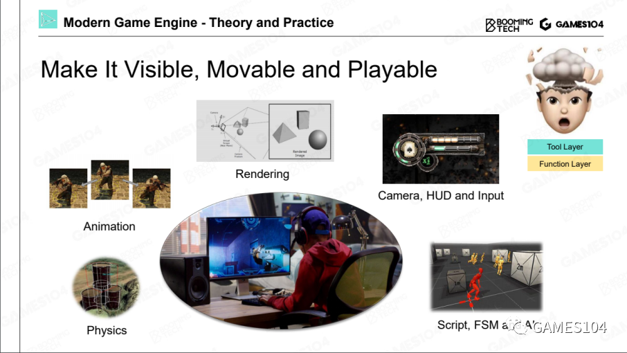
但功能层在很多引擎的架构中，它经常和具体的游戏关联在一起，因此，很多时候哪些功能属于游戏，哪些功能属于引擎，基本上就会在功能层上打架。
Tick
在游戏的世界里面，是如何让这个世界动起来的？其实就是利用现代计算机非常高的计算速度，在每隔1/30秒把整个世界的逻辑和绘制全部跑了一遍。

在实际源码里面不一定叫tick
Tick Logic 和 Tick Render
在Tick里面，就会出现两大神兽，一个叫Tick Logic，一个叫Tick Render。
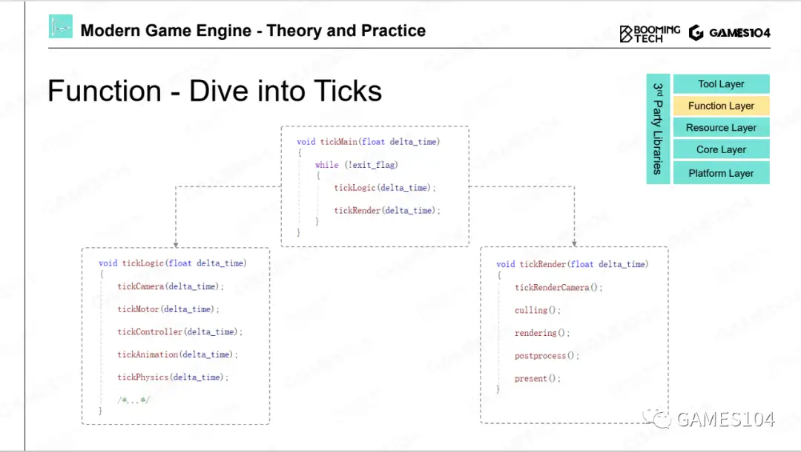
- TickLogic
负责这个世界模拟出来
- TickRender
从某个观察视角，把能看到的世界绘制出来
- 二者的关系
通常是先逻辑再绘制。
逻辑和绘制一定要严格细分，一个没有受过系统训练的游戏引擎开发者，很容易把两边的代码写混在一起，但是，如果把绘制和逻辑分开，基本上无论怎么写，都不会重合在一起。
多核时代的游戏引擎架构

资源层
资源层是游戏非常核心的一个管理层，它管理能让整个游戏引擎跑起来的生态资源池的分配，以及每个资产实时的生命周期。
-
资源 -> 资产 资源：来自各种DCC工具得到的各种格式的资源文件
资产：一种统一的、高效的内部数据形式 -
GUID 每个资产设置一个唯一识别号。
-
资产管理器(runtime asset manager)
这里最主要的管理是对所有这些资产的生命周期的管理。因为在游戏过程，资源要不停地加载和卸载。生命周期的管理会很大地影响系统的效率。
- handle系统，类似于指针的概念
- GC系统
核心层
为功能层提供与具体功能无关的通用能力，类似于操作系统。

- 数学库
- 数据结构
- 内存管理
为什么要自己写而不是直接使用已有的库，主要是效率方面的考虑，实现一套定制化的高效的通用能力。
平台层
在引擎的这一层，就是处理各种各样的平台。
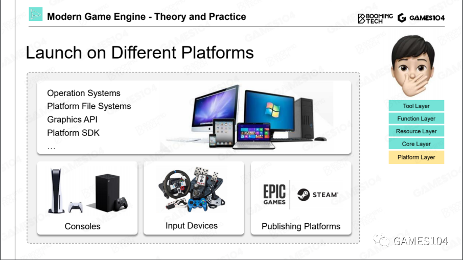
平台层的本质是在上面写核心代码/功能/逻辑，可以无视平台的差别。它把平台的差异性全部掩盖掉，提供RHI——Render Hardware Interface，把这些硬件的SDK差别封装起来。
第三方插件
有的插件是通过SDK的形式直接集成到我们的引擎里面去，就是说引擎里面编译的时候，就要把第三方代码编译进去。
有的插件是一个独立的工具。它和引擎之间的数据交换，只是通过文件格式进行交换。

总结
分层架构的本质是封装。
- 这个世界如果没有封装，只是把所有的概念散落，那是不可被理解，也是不可被管理的。
- 在架构中有个基础原则：越往底层的东西越不要去动它。
- 当我们未来在做任何一个需求的时候，同学们首先要去想的是做的这件事情应该属于哪一层，而不是着急地把算法写出来。
- 各个层次之间的调用，一般只允许上面的层次调下面层次的功能，绝对不允许下面反向调上面一层的功能，这就是分层的一个核心的体系结构。
游戏世界的组成
游戏对象Game Object (GO)
所有的动靜态物体统称为游戏对象Game Object (GO)
- 可交互的动态物
- 默默的静态物
- 动静结合态系统，例如植被
- 检测体
大地和天空系统是独立的
GO的成员可以归类成两类，一类叫做属性，另一类叫做行为。
每个对象都有一个属性叫做GUID，这是这个对象的全局唯一标识。
组件化
用面向对象的逻辑去构建这个世界有一个缺陷：随着游戏世界越来越复杂，有些东西它并没有那么清晰的父子关系。
这个问题有一个经典的解法，叫做组件化。
| 面向对象 | 组件化 |
|---|---|
 |  |
商业引擎中的组件化结构
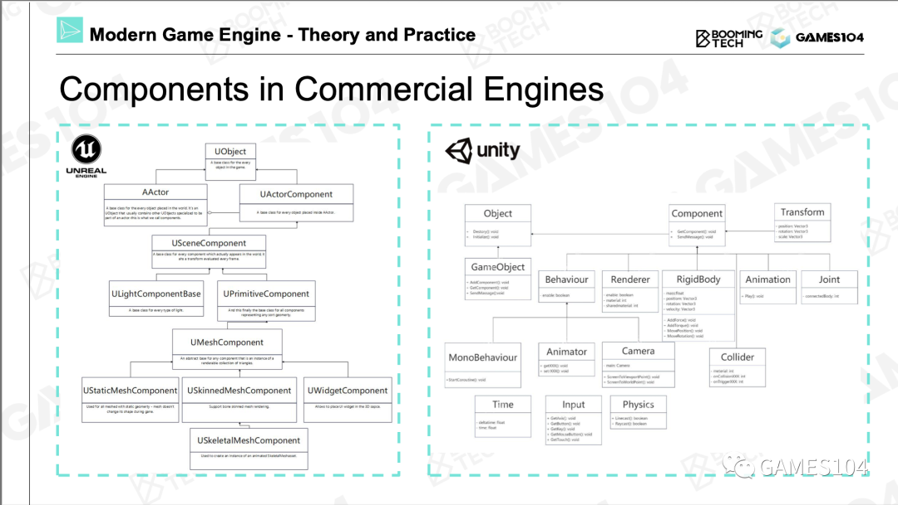
| UE | Unity | 作用 |
|---|---|---|
| UObject | Object | 所有对象的基类，用于对象的生命周期的管理 |
| AActor | GameObject | 相当于本文中的GO |
| UActorComponent | Component | 相当于本文中的组件 |
总结
第一，游戏世界里面几乎把所有的东西抽象成了游戏对象Game Object （GO）这样一个东西。第二，每个GO用各种各样多功能的组件把它组合起来，所以各种组件又是游戏对象的原子，如果这两件事情明白了，你就明白了现在游戏的组合的一个基础逻辑。
如何让游戏世界动起来
在游戏引擎里面核心的一个函数叫做Tick，就是每隔1/30秒让这个世界往前走一步。
Object-based Tick
在每个tick里，把每一个游戏物体的每一个组件依次去Tick一遍，世界就动起来了。

Component-based Tick
按照每个系统或者是每一种组件进行Tick，这样效率更高

总结
现代游戏引擎，为了追求效率，逐渐的会转向按照每个系统或者是每一种组件进行Tick，就是造个流水线进行批处理，这样效率会特别高。
事件机制
到目前为止，各个对象是独立的，事件机制让各个对象之间互相影响相互关联。
一个对象需要影响另一个对象，但不是通过hard code直接去影响。而是通过事件机制统一处理这种影响，这是对象与组件逻辑的解耦。
商业引擎中的事件机制

Unity
如果GO1要对GO2产生影响，GO1需要做这些事情：
- 注册一个事件，事件包括要影响的目标和回调函数。
- 然后发送事件
- 最后销毁事件。 当GO2收到了这个事件后，激活回调函数做相应的处理。
UE
UE使用了比较复杂的C++反射机制，其原理大同小异。
它的本质就是让接口的消息不断扩展定义。一个可扩展的消息系统，让游戏开发者可以在我们的引擎之上不断的定制玩法和相关的各种各样的消息类型，然后他们可以定制各种各样自己想要的组件去对这些消息，让事件进行按照自己想要的逻辑的处理，这就是现在游戏引擎的核心的一个工作。
场景管理
当场景中的对象非常多时，查找/访问对象会成为巨大的负担。场景管理是指根据角色的位置，对角色进行递归分组，避免全局性的角色查找。
均匀分组
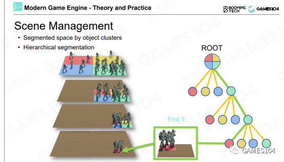
优点：简单直观
局限性：角色在地图里的分布通常是不均匀的。稀疏处的格子是浪费的，而密集处的格子仍然会很慢。
树形结构
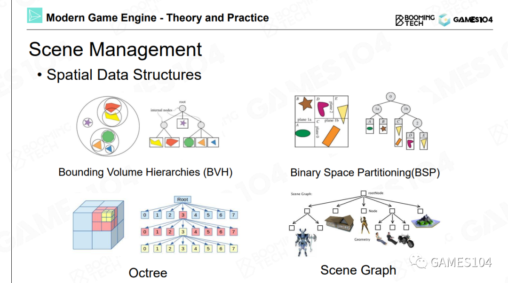
根据实际情况决定是否需要继续分。
根据实际情况决定怎么分。
时序的一致性问题
由于各个角色、各个组件是独立tick的，它们之间是并发关系，因此同样的输入，其结果是不确定的。
使用“邮局”作为第三方，根据依赖关系定义发生的顺序，可以确保它的时序是严格一致的，但实际上角色之间存循环依赖。
时序一致性问题会产生很多逻辑上的混乱性，这个混乱性在很多时候你会注意不到。但实际上的话，对游戏的影响是非常大的。
游戏引擎中的渲染系统的挑战
挑战一：复杂性问题
一个场景中可能存在着成千上万个物体对象，而且每个对象的形式都不一样。比如场景中可能同时出现水体、植被（foliage）、角色、云朵等对象。每个对象需要用到的绘制算法，比如水体的算法、植被的算法、毛发的算法、皮肤的算法、还有地面上的材质的算法等等，这些算法都完全不同。
但渲染理论通常是针对一种对象解决问题。
挑战二：硬件的深度适配问题
游戏绘制系统的实现是一个实践性问题，它需要运行在各种性能的现代硬件上。
同学们需要对经典计算机的架构有所了解，比如南桥和北桥的概念、显卡和CPU的通信方式等等。游戏绘制系统所实现的所有算法必须要在这些现代的PC或者主机（比如Switch）上高效运行。因此我们需要对这些设备的硬件进行非常深入的了解，才能充分利用各种硬件的特性，从而实现高效的算法。
但在图形学理论中，我们一般不会特别关注具体的硬件实现，而只关注图形学理论在算法或者数学上的正确性。
挑战三：性能预算问题
- 游戏中的场景是千变万化的，而且必须在这种情况下保证稳定的帧率。
- 每帧的时间预算越来越少，30FPS -> 60 FPS -> 120 FPS
- 对画质的要求越来越高,1080P -> 4K -> 8K
但在学习图形学理论时，如果实现了一个算法的效果，并且达到了相对较好的帧率，我们认为就可以了。
挑战四：时间预算分配问题
工业级游戏引擎的绘制系统和同学们在图形学课上所学到渲染算法有所不同，它并不能将100%的计算资源全部用掉。一般来说，绘制系统只能使用大概10%-20%左右的计算资源，剩下的大部分计算资源需要分配给其他的系统，比如Gameplay等模块。这也是一个硬性要求。
本课程内容
接下来所讲的所有内容，并不是纯粹的理论模型，而是非常具有实践性的工程知识，在经过了游戏行业接近30年的迭代优化所形成的软件系统，属于实践科学的范畴。
第一节课
- 介绍基础的GPU硬件的相关知识
- 在基于GPU硬件的架构上，如何对渲染数据，以及整个渲染体系进行管理
- 包括可见性裁剪等基础知识
同学们会了解到GPU绘制物体的基本原理。
第二节课
- 介绍游戏开发实战中用到的光照和材质的知识。
- 包括现代游戏中使用的光照模型的介绍
- 以及著名的IBL模型
- 介绍现在行业内最标准的材质系统
- PBR材质
- 两种最经典的材质模型之间的优异度差别
- 介绍Shader模型相关的知识。
第二节课结束之后，大家应该能够了解如何绘制出接近于现代游戏画质的画面表现，做出来的内容看上去会很接近工业级产品画质的画面。
第三节课
- 介绍游戏中很多很重要的子系统
- 地形系统
- 天空系统
- 后处理系统
经过前三节课的知识储备，大家会对基础的数据组织，基础的绘制算法，以及材质模型有所了解。
第四节课
- 开始讲解管线（Pipeline）方面的相关知识,比如延迟着色（DeferredShading）。
- 讲解延迟着色的设计原理
- 延迟着色的关键点。
- 在实际开发过程中，完成绘制之后，如何将画面提交到屏幕上
- 显卡所绘制的内容是如何管理的，包括如何在屏幕上进行同步。
- Tiled-Based Rendering方法
由于受到课程时长的限制，因此本课程不会涉及：
- 卡通渲染方面的知识
- 非真实感渲染（Non-Photorealistic Rendering
- 2D游戏引擎方面
- 一些酷炫的效果，本课程也不会涉及，包括皮肤的次表面散射材质效果、毛发效果等。
这些内容适合作为一些特定的专题讲座来介绍。
Pipeline

绘制的最核心工作就是计算（Computation）。
- 投影。我们设定一个相机位置，然后对物体进行投影（无论是正交投影还是透视投影），就可以得到屏幕空间中的三角形。
- 光栅化。将屏幕空间中的三角形光栅化成一个个的像素。
- 着色，也叫做绘制。着色器代码将自己所处理的像素点所对应的纹理贴图上的坐标的相应位置上的颜色值取出。 进行一次纹理采样，需要采样八个像素点的数据，并且进行七次插值运算。因此，纹理采样是绘制过程中的一个很重要的运算。
GPU（Graphic Processing Unit）
随着独立显卡的出现，我们可以将这些复杂的运算用一台更高效的机器进行处理，这样可以释放出大量的CPU时间。
基本概念
- SIMD（Single Instruction Multiple Data）
对于一个四维向量来说，每进行一次加法操作，它的XYZW坐标会同时进行运算。所以一条指令就能够完成四个加法或者四个减法运算。
- SIMT（Single Instruction Multiple Threads）
即将一个计算核心做得很小，这样可以同时提供多个计算核心，并且可以同时在多个核心上执行同一条指令。
如果我们有100个计算核心，向这100个核心发送一条指令，就可以同时进行100次四维向量的加减。相当于将一条指令的计算效能放大了400倍。现代显卡如同一个蜂巢，其中内置了很多小型计算核心。NVIDIA的显卡中就内置了很多称为CUDA的计算核心。这就是现代显卡算力强悍的原因。

- FLOPS （floating-point operations per second）
FLOPS代表着显卡的浮点运算能力，即每秒浮点运算次数。
为什么显卡的算力能够遥遥领先于CPU呢？本质上是因为显卡中具有大量可以同时进行并行计算的小型计算核心，每个核心的功能简单，只可以进行简单的计算。而CPU的核心数量很少，但单个核心的计算能力很强。
因此显卡的并行计算能力十分强大。因此，我们在设计绘制算法的时候，要尽可能地利用SIMT结构的优势，尽可能使用相同的代码进行并行计算。这样一来，每个计算核心都可以分别访问自己的数据，这样可以充分发挥显卡架构的优势。
GPU Architecture

- ALU（Arithmetic Logic Units，算术逻辑单元）
- SFU（Special Function Unit，特殊功能单元）：专门的硬件处理各种耗时的纹理采样工作，以及一些比较复杂的数学运算。比如正弦、余弦、指数、对数等超越函数运算。
- RT Core：用来加速光线追踪BVH算法的硬件逻辑电路。
在GPU上的运算都会被分配到每个流式多处理器上进行处理。而流式多处理器中的几十个核心不仅可以进行并行处理，相互之间还可以交换数据，从而进行协作。
数据传输
我们一直使用的都是冯洛伊曼架构，即将计算和数据分开。这样的架构会让硬件设计变得非常简单。
冯洛伊曼架构的最大问题是，每一次计算，都需要去获取数据。但是获取数据的操作速度非常慢，而且数据在不同的计算单元（例如CPU和GPU）之间搬来搬去也是非常之慢。
这一过程存在一个非常严重的问题，在现在引擎架构中，绘制和逻辑通常是不同步的。如果有一步绘制运算需要等待数据，则可能会导致半帧到一帧的延迟（Latency）。
因此，在游戏引擎的绘制系统架构中有一个原则，就是尽可能将数据单向传输。即CPU将数据单向发送到显卡，并且尽可能不要从显卡中回读数据。这也是现代计算机结构对渲染系统设计的一个限制。
Cache
缓存对于现代计算的性能影响是非常大的，可能远远超过大家的想象。这也是数据一定要放在一起的原因，其实就是为了缓存去做这样的准备。因为数据连贯性对于缓存来说非常重要。如果有些数据过大，那么也会导致缓存很难被利用好。
可渲染物体
网格在游戏引擎中如何表示
- 顶点位置：用索引数据（Index Data）和顶点数据（Vertex Data）来定义三角形的信息
- 顶点处的法线朝向：使用邻近的几个三角形的法向量进行平均得到的法向量在硬表面（比如立方体）的折线处会出错，因此建议自己定义法向
- 顶点的UV坐标
- 材质：绘制系统中定义的材质表达的是物体的视觉属性，而不是物理材质中表达的物理属性
- 纹理：人眼对于材质类型的感知（即看起来像金属还是像生锈的非金属表面）并不是由材质的参数决定的，很多时候是由它的纹理所决定的
- 其他各种各样的属性
着色器对效果进行计算
Shader的神奇之处在于，Shader是一段代码，因为我们需要编写大量的代码来表达材质，但是在游戏引擎中又会被当成数据来处理。
绘制一个物体的流程大致如下：
- 首先告诉显卡需要绘制的具体物体，
- 然后传入物体的纹理，
- 还需要传入一小段代码，我们一般称为一个Block（一个二进制的数据块），这就是我们编译好的一段Shader代码。
- 显卡会使用这段Shader代码，将这些元素融合到一起，
- 进行一些计算，绘制出我们想要的效果。
Shader Graph：当艺术家想表达各种各样的材质时，会像搭积木一样，将各种元素按照自己的方法进行组合。组合完之后，引擎就会生成一段Shader代码，而这段Shader代码又会被编译成一个Block，和网格存储在一起。各种各样的网格和Shader代码组合在一起，就形成了多彩的游戏世界。因此，着色器代码也是一种关键的可渲染数据。
Submesh
每个对象上的网格，我们会根据所应用材质的不同，把其切分成很多子网格。然后对于每个子网格，分别应用各自的的材质、纹理和着色器代码。
池(Pool)
很多数据中的网格、贴图和着色器都是一样的，为了节约空间，在现代游戏引擎中，通用的做法是建立一个池（Pool）。
将所有的网格放到一起，形成一个网格池；将所有的纹理放在一起，也形成一个纹理池。尤其是着色器，也有一个池。
对象都是以引用的方式使用这些池里的数据。
总结：
- 首先，按照材质将对象切分成子网格。
- 将相同的材质全部归类到一起，相同的纹理也归类到一起，用一个池进行管理。然后，将相同的网格也放到一起，也使用一个池进行管理。
- 当绘制物体时，到相应的池中寻找对应的数据即可。
可见性剪裁
只有位于视锥体中的物体才会被显示到屏幕上。
每个物体都有一个包围盒，我们可以通过一些简单的数学运算，判断物体的包围盒是否位于视锥中。这就是可见性裁剪的基础思想。
包围盒：AABB, OBB, Sphere, Convex Hull
相交计算：BVH

裁剪算法：PVS

遮挡优化：Early-z
千万不要用老的算法去限制你的想法，一定要拥抱硬件的最新变化。
纹理压缩
在游戏引擎中，我们一般会将纹理压缩存储。但不能使用一些流行的、非常优秀的算法对图片进行压缩，因为经过这些算法压缩后的图片无法进行随机访问。
在游戏引擎中，我们一般采用基于块（Block Based）的压缩方法。我们将图片切成一个个小方块，最经典的就是4×4的小方块，然后进行压缩。
一个非常经典的算法

在一个4×4的色块中，可以找到最亮的点和最暗的点，即颜色最鲜艳和颜色最暗的点，然后将该方块中的其他点都视为这两个点之间的插值。因为对于很多图片来说，相邻的像素之间都有一定的关联度（Coherence）。所以我们可以存储一个最大值和一个最小值，然后为每个像素存储一个距离最大值和最小值的比例关系，这样就可以近似地表达整个色块中的每个像素的颜色值。
DXT系列的压缩算法
DXT系列压缩算法的优势在于，当生成了一个纹理后，就可以在CPU上对纹理进行实时压缩。无论是压缩还是解压缩，这一系列算法的效率都非常高。
ASTC算法
手机上使用的压缩算法。ASTC压缩的分块就不再是严格的4×4了，它可以使用任意的形状。
优点：ASTC的压缩效果是最好的，解压缩的效率也不低。
缺点：压缩时的性能消耗较大，因此无法在运行中进行压缩。
Cluster-Based Pipeline

面对一个非常精细的模型时，我们可以将其分成一个个小的分块，可以称之为Meshlet或者Cluster。而每一个Meshlet都是固定的，比如32个或者64个三角形大小。
因为当我们将每个Meshlet的大小固定之后，在显卡上的计算都是极其高效且一致的。
壳着色器（Hull Shader）、域着色器（Domain Shader）和几何着色器（Geometry Shader），这类Shader的核心想法是，我们可以使用一个算法，基于数据凭空生成很多几何细节，而且可以根据距离相机的远近，选择所生成的几何细节的精度。
优点：可以产生无数的细节，并且可以让艺术家自由发挥。这是一个非常值得大家关注的引擎的一个前沿的发展方向。
缺点：基于Cluster或者Meshlet的管线对于程序员的要求要比以前高很多。因为我们要进行大量的处理和运算，而且具体实现代码也不易理解。
Nanite
虚幻引擎的Nanite，它实现了像素级的网格密度。可以认为，Nanite是将Meshlet的思想又往前深入了一步，做的更加工业化、更加成熟。这也是现代引擎的渲染管线发展的一个重要方向。
总结
第一，游戏引擎的绘制系统是一个工程科学，并且深度依赖于你对现代图形硬件的理解。因此如果你想成为一个图形工程师，你必须要理解显卡的架构，知道显卡的性能卡点在哪里，了解各种性能限制。
第二，在游戏中，我们要解决的核心问题就是网格模型、材质等数据之间的关系。最经典Mesh和Submesh就是一个非常好的解决方案。但是最前沿的技术会有所不同。
第三，在进行绘制的时候，尽可能的通过一些运算（剪枝）减少绘制工作，这样能够达到最佳性能。
最后，也是非常重要的一个趋势，即越来越多的绘制运算，包括一些复杂的处理，都已经从CPU转移到GPU，以利用现代GPU的高速处理能力。这就是GPU驱动（GPU-Driven）的思想，即将很多在CPU上进行的一些复杂运算（比如动画系统等）全部转移到显卡。这也是利用GPU帮助CPU分担负载的一个重要的方式。
P47
Physical-Based Material
P54
Disney Principled BRDF
Principles to follow when implementing model:
- Intuitive rather than physical parameters should be used
- There should be as few parameters as possible
- Parameters should be zero to one over their plausible range
- Parameters should be allowed to be pushed beyond their plausible range where it makes sense
- All combinations of parameters should be as robust and plausible as possible
P56
PBR Specular Glossiness

用图片方式帮助选择参数，实现 shader，把参数代入模型，计算结果。
P58
PBR Metallic Roughness
Specular Glossiness 模型的封装版，解决其 Frenel 项炸掉的问题。灵活度下降，但不容易出问题。
P60
PBR Pipeline MR vs SG

MR
Pros
- Can be easier to author and less prone to errors caused by supplying incorrect dielectric F0 data
- Uses less texture memory, as metallic and roughness are both grayscale maps
Cons
- No control over F0 for dielectrics in map creation. However, most implementations have a specular control to override the base 4% value
- Edge artifacts are more noticeable, especially at lower resolutions
SG
Pros
- Edge artifacts are less apparent
- Control over dielectric F0 in the specular map
Cons
- Because the specular map provides control over dielectric F0,it is more susceptible to use of incorrect values. It is possible to break the law of conservation if handled incorrectly in the shader
- Uses more texture memory with an additional RGB map
P61
Image-Based Lighting (IBL)
P62
Basic Idea of IBL
对真实的环境光照做预处理，快速地计算环境光照与材质之间的卷积。
SH 的局限性：SH 的表达比较粗糙，只能有明暗的感觉，达不到场景细节感和凹凸感的效果。
P64
Diffuse Irradiance Map

根据上文可知，\(L_o（x，W_o）\) 可以分为 diffuse 项和 specular 项。 Diffuse 须提前把卷积结果算好存下来。实时渲染时查表即可。
P65
Specular Approximation

Specular 项的推导比较复杂，且做了大量假设和近似。
但 specular 结果与参数 roughness 有关。因此将不同 roughness 的结果存到了不同的 mipmap 中。因为，roughness 越大，对光的敏感度越低，可以放到 mipmap 的最低级。
方法详见 GAMES 201。
P66
Approximation: part (1/2)

P67
Approximation: part (2/2)


P68
Quick Shading with Precomputation

P69
Shading PBR with IBL

P70
Classic Shadow Solution
P75
Hard Shadow vs Realistic Shadow

P76
PCF - Percentage Closer Filter
- Target problem
- The shadows that result from shadow mapping aliasing is serious
- Basic idea
- Sample from the shadow map around the current pixel and compare its depth to all the samples
- By averaging out the results we get a smoother line between light and shadow

用滤波的法做软阴影。
P77
PCSS - Percentage Closer Soft Shadow
- Target problem
- Suffers from aliasing and under sampling artifacts
- Basic idea
- Search the shadow map and average the depths that are closer to the light source
- Using a parallel planes approximation

P78
Variance Soft Shadow Map
- Target problem
- Rendering plausible soft shadow in real-time
- Basic idea
- Based on Chebyshev‘s inequality, using the average and variance of depth, we can approximate the percentage of depth distribution directly instead of comparing a single depth to a particular region(PCSS)
P79
Summary of Popular AAA Rendering
光：Lightmap + Light probe
材质： PBR + IBL(环境光)
阴影：Cascade shadow + VSSM
P80
Moving Wave of High Quality
P81
Quick Evolving of GPU
- More flexible new shader model
- Compute shader
- Mesh shader
- Ray-tracing shader
- High performance parallel architecture
- Warp or wave architecture
- Fully opened graphics API
- DirectX 12 and Vulkan
P82
Real-Time Ray-Tracing on GPU

P83
Real-Time Global Illumination
Screen-space GI
SDF Based GI
Voxel-Based GI（SVOGI/VXGI）
RSM / RTX GI
P86
Shader Management
P90
Uber Shader and Variants
A combination of shader for all possible light types, render passes and material types
- Shared many state and codes
- Compile to many variant short shaders by pre-defined macro

利用 uber 写好少量 shader 模版，然后自动生成大量 shader.
P92
Cross Platform Shader Compile

P5
Terrain Rendering
地形系统
P27
Mesh Shader Pipeline
- Amplification Shader Stage - decides how many Mesh shader groups to run and passes data to those groups
- Mesh Shader Stage - produces a semi-regular tessellation pattern for each patch, and outputs comprise vertices and primitives

只持 DX12 及以上。
可以基此实现动态高度的地形效果。
P45
Virtual Texture
P46
这个方法涉及 GPU、内存、硬盘之间切换。
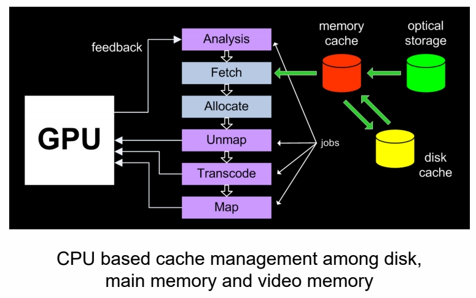
新显卡的方式：
- DirectStorage: 硬盘数据只是从内存过一下，到 GPU 才解压，提升传输效率。

- DMA：硬盘直接往 GPU 写数据。

Production Friendly Quick Sky and Atmosphere Rendering
Simplify Multi-scattering Assumption
- Scattering events with order greater or equal to 2 are executed using an isotropic phase function
- All points within the neighborhood of the position we currently shade receive the same amount of second order scattered light
- Visibility is ignored
$$ G_{n+1}=G_n\ast f _{ms} $$
$$ \mathbf{ F_{ms}=1+f_{ms}+f^2_{ms}+f^3_{ms}+\dots = \frac{1}{1-\mathbf{f_{ms}} } } $$
$$ \mathbf{\Psi _ {ms} }=\mathbf{L_ {2^{nd}order} F_ {ms} } $$
假设“散射是各向同性的”。那么，“均匀的入射光到均匀的出射光”的过程，只是一个简单的能衰减过程。所以只需要求出衰减比例，每 bounce 一次就按这个比例衰减就可以了。
P83
Fixed view position and sun position to remove 2 dimensions out of LUT
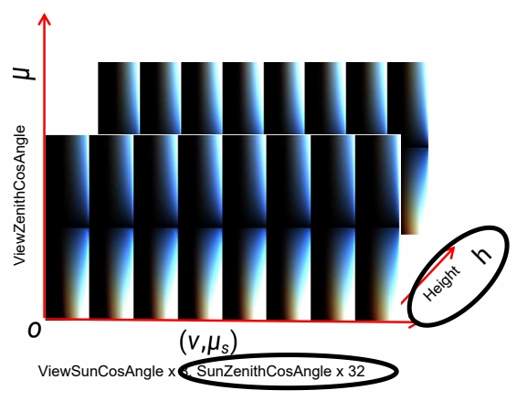
对上文中的 LUT 的简化：
(1) 假设人所在的高度不变，去掉 height 维
(2) 假设太阳位置不变，去掉入射角的维度仅留下出射光的维度(天顶角、环角)
P84
- Generated a 3D LUT to evaluate aerial-perspective effects by ray marching

这个方法不保证物理正确，但好处是：
(1) 艺术家友好
(2) 可以创造异星世界效果
(3) 硬件友好
P85
Good Balance of Performance and Effect
- Scalable from mobile to high-end PCs
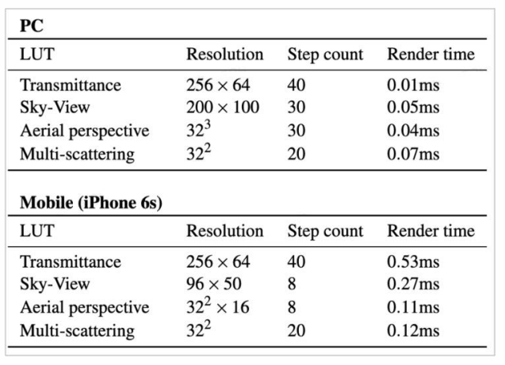
Performance for each step of method, as measured on PC (NV 1080) and a mobile device (iPhone 6s)
P34
Post-process
Post-process in 3D Graphics refers to any algorithm that will be applied to the final image. It can be done for stylistic reasons (color correction, contrast, etc.) or for realistic reasons (tone mapping, depth of field, etc.)

P35
Bloom Effect
P36
What is Bloom
- The physical basis of bloom is that, in the real world, lenses can never focus perfectly
- Even a perfect lens will convolve the incoming image with an Airy disk

P37
Detect Bright Area by Threshold

Find Luminance (Y) apply the standard coefficients for sRGB:
$$ Y=R_{lin}\ast 0.2126+G_{lin}\ast 0.7152+B_{lin}\ast 0.0722 $$
取出非常亮的部分，做与 5\(\times \)5 高斯 blur。
P38
Gaussian Blur

P39
Pyramid Guassian Blur

We can't do all that filtering at high resolution, so we need a way to downsample and upsample the image Need a weight coefficient to tweak final effect
在低精度图上 blur 再放大，可以得到大区域的 blur 效果同时较小的计算量。
P40
Bloom Composite
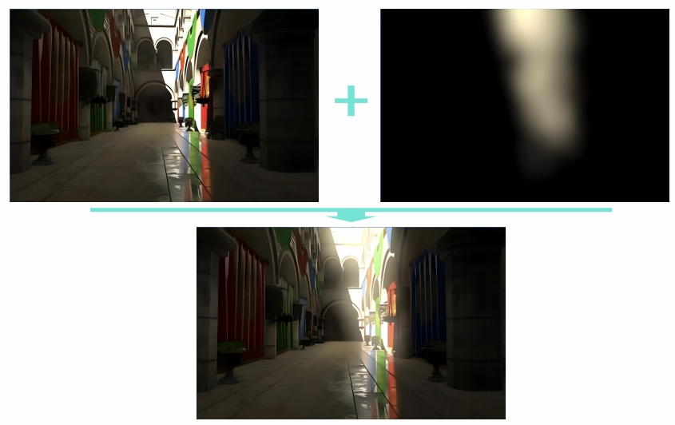
P41

P42
Tone Mapping
真实世界的亮度 range 非常大，如果曝光没调好，会出现亮部过亮或暗部过暗的效果。
P43
Tone Mapping
- No way to directly display HDR image in a SDR device
- The purpose of the Tone Mapping function is to map the wide range of high dynamic range (HDR) colors into standard dynamic range (SDR) that a display can output
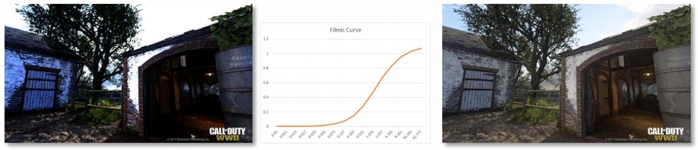
用一条曲线把 HDR 映射到 SDR。
filmic curve 是一个拟合出来的所项式曲线。
P45
ACES
- Academy Color Encoding System
- Primarily for Film & Animation
- Interesting paradigms and transformations
- The useful bits
- Applying Color Grading in HDR is good
- The idea of a fixed pipeline up to the final OTD transforms stage is good
- Separates artistic intent from the mechanics of supporting different devices

ACES 曲线不但效果更好，还可以通注增加一个后处理，无差别适配到任何终端。
P46
HDR and SDR Pipeline
- Visual consistency between HDR / SDR
- Similar SDR results to previous SDR color pipeline
- High quality
- High performance
- Minimal disruption to art teams
- Simple transition from current color pipeline
- Minimal additional overhead for mastering HDR and SDR

P47
Tone Mapping Curve Comparison


P48
Color Grading
P49
Lookup Table (LUT)
-
LUT is used to remap the input color values of source pixels to new output values based on data contained within the LUT
-
A LUT can be considered as a kind of color preset that can be applied to image or footage

用一个表格实现从原始色相空间到目标色相空间的映射。
P53
Rendering Pipeline
P59
Rendering Pipeline
- Rendering pipeline is the management order of all rendering operation execution and resource allocation

P60
Forward Rendering
for n meshes
\(\quad\) for m lights
\(\quad \quad\)color += shading(mesh, light)
P61
Sort and Render Transparent after Opaque Objects

透明物质必须最后绘制。
多个透明物质则由远及近绘制，因为不同绘制顺序产生的结果是不一样的。
透明物体的排序很容易引起各种 BuG。
十几年前的主流 Pipeline。
P64
Deferred Rendering

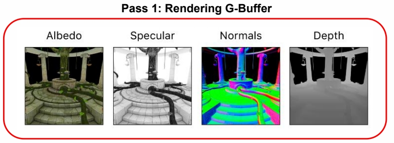

由于光的种类非常复杂，引入延迟渲染技术，即先绘制物体，再考虑与光的关系。
近十年最主流的 Pipeline.
P65
Deferred Rendering
Pros
- Lighting is only computed for visible fragments
- The data from the G-Buffer can be used for post- processing
Cons
- High memory and bandwidth cost
- Not supporting transparent object
- Not friendly to MSAA

P66
Pilot Engine Deferred Rendering

P67
Tile-based Rendering


这个 pipeline 用于移动端。因为移动端最关心发热问题。
DRAM 存储大、速度慢、功耗高。On-chip 中的 SRAM 则相反。
因此，把整个 G-buffer 切成小的 tile 在 SRAM 计算，算好存成framebuffer。
P68
Light Culling by Tiles

P69
Depth Range Optimization
- Get Min/Max depth per tile from Pre-z pass
- Test depth bounds for each light

tile-based 是现代引擎的主流方案。
tile 的额外好处是简化光的计算。
P71
Forward+ (Tile-based Forward) Rendering
- Depth prepass (prevent overdraw / provide tile depth bounds)
- Tiled light culling (output: light list per tile)
- Shading per object (PS: Iterate through light list calculated in light culling)
P72
Cluster-based Rendering

对 Z 空间也做切分。一个小块称为 cluster。
P73
Visibility Buffer

几何信息 (V-Buffer) 和材质信息 (G-Buffer) 剥离开。
因为现在的几何越来越复杂，甚至几何密度超过像素密度。
这是现代引擎的发展方向。
P74

P75
Challenges
- Complex parallel work needs to synchronize with complex resource dependency
- Large amount of transient resource whose lifetime is shorter than one frame
- Complex resource state management
- Exploit newly exposed GPU features without extensive user low level knowledge
P76
Frame Graph
A Directed Acyclic Graph (DAG) of pass and resource dependency in a frame, not a real visual graph

Frame Graph 是未来重要的发展方向。
P77
Render to Monitor
P78
Screen Tearing
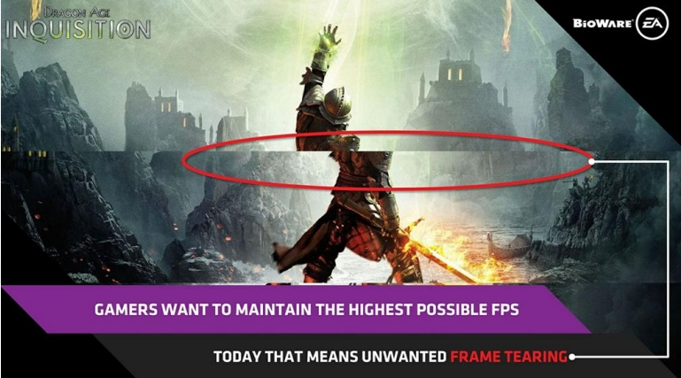
P79
Screen Tearing
In most games your GPU frame rate will be highly volatile
When new GPU frame updates in the middle of last screen frame, screen tearing occurrs

P80
V-Sync Technology
Synchronizing buffer swaps with the Vertical refresh is called V-sync
V-Sync can be used to prevent tearing but framerates are reduced, the mouse is lagging & stuttering ruins gameplay

P81
Variable Refresh Rate